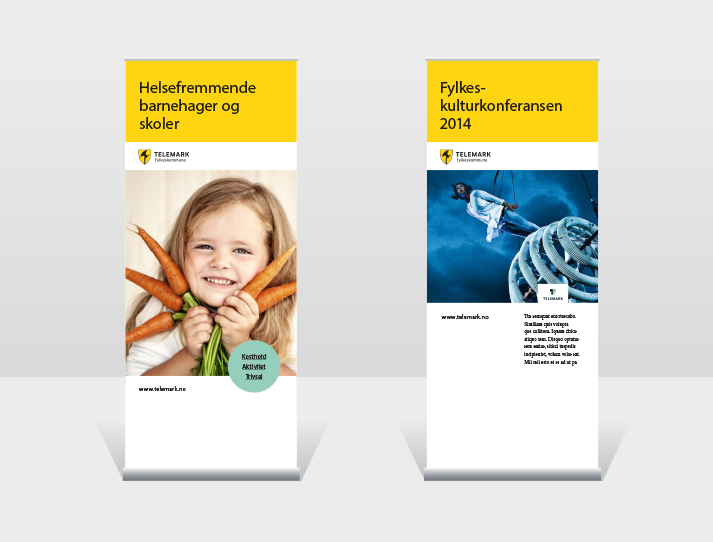
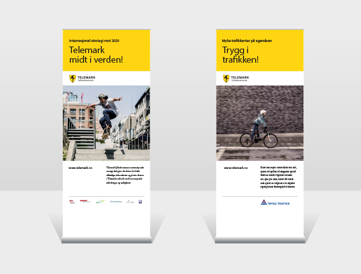
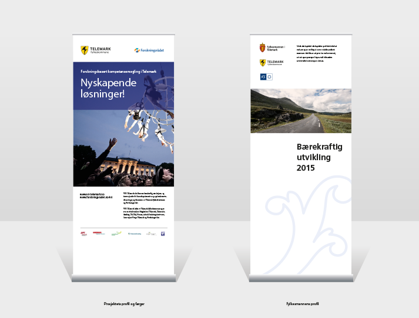

Rollup
Fylkeskommunen som avsender
Her kan merkevaren Telemarks logo brukes siden fylkeskommunen er eneste avsender.
Begrens alltid mengde tekst på rollup (store tekstmengder passer bedre til brosjyrer). For å oppnå tydelighet og blikkfang, skal man fatte seg i korthet på disse flatene.
Det kan være behov for noe ekstra tekst. Dette kan settes inn i et formelement. Sirkelen er en myk kontrast til den ellers stramme layout-malen. Settes gjerne i en kontrastfarge som kler uttrykket. I denne sammenhengen passet den turkise flott til den gule flaten og tonene i bildet.
Bruk flat grafikk og unngå skyggeeffekter.
Er det mer tekst som skal med, må dette settes på hvit bakgrunn og bildet får mindre eksponeringsflate.

Samarbeidspartnere
Telemark fylkeskommune kan vise samarbeidspartneres logo i sitt materiell. Det er viktig at disse er underordnet og at fylkeskommunens profil er klar og tydelig.
Her brukes ikke merkevaren Telemarks logo fordi det er flere logoer med.
Fylkeskommunen skal ikke ha egne logoer for prosjekter eller satsninger. Dette er et bevisst grep for være tydelig mot publikum og for løfte fram hovedlogoen.

Flere avsendere
Dette er eksempel på rollup med to hovedavsendere. Da skal ikke profilen til Telemark fylkeskommune brukes, og vi havner under regler for frihetsgrad 2. Det er prosjektets farger eller samarbeidets identitet som preger det visuelle uttrykket.
Følg generelle retningslinjer for bruk av logo. Ikke sett den på forstyrrende bakgrunner og bevar anbefalt avstand rundt logo.
